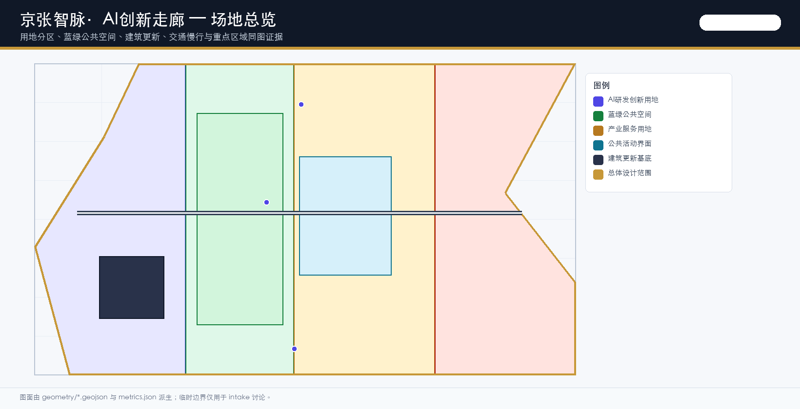
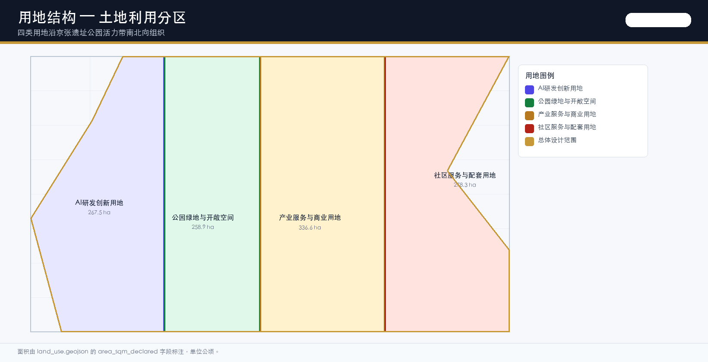
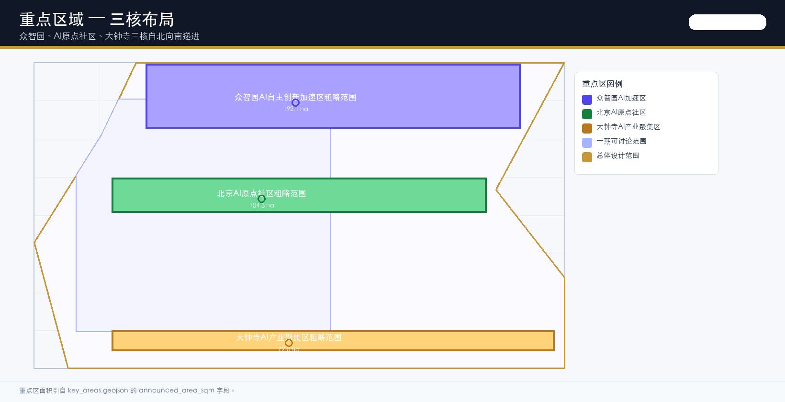
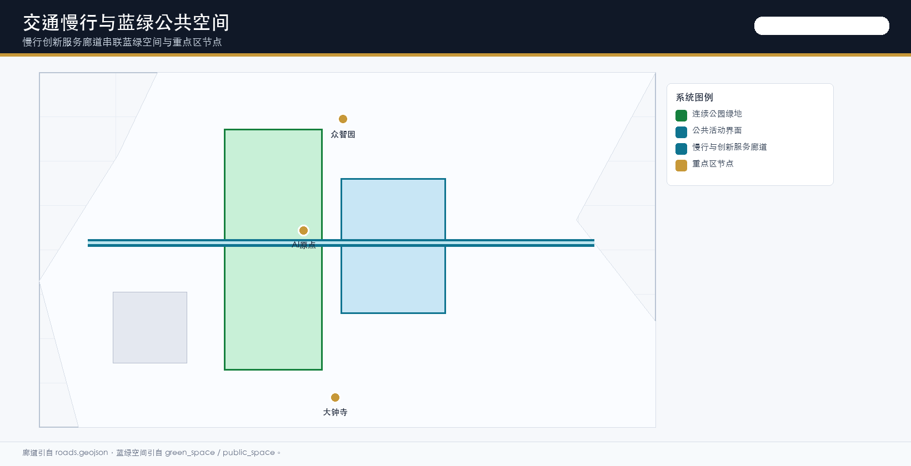
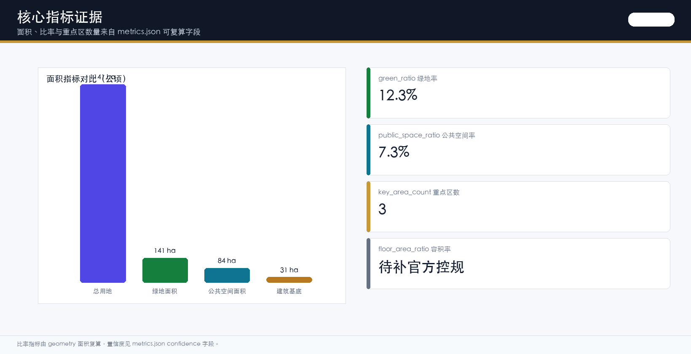

Jing-Zhang Smart Corridor / 京张智脉·AI创新走廊
An urban design proposal structured around 'One Belt, Three Cores, Smart-Vein Symbiosis', anchored by the century-old Jing-Zhang Railway as cultural skeleton, AI innovation ecosystem as engine, and youth-friendly public space as carrier. The proposal integrates cultural heritage narrative, AI origin community innovation services, and youth vitality space, responding to all agent.1-agent.6 tasks.
Jing-Zhang Smart Corridor
Provisional Boundary Statement: All spatial layers in this proposal are based on provisional_only boundaries (DATA-SRC-PROVISIONAL-BOUNDARIES-20260605, agent_inferred_from_public_data), not official red lines. All areas, ratios, and metrics are low-confidence estimates and must be recalculated in full once the official polygon is released. See assumptions.json A-BOUNDARY-001 for details.
Design Basis and Source Inventory
This formal proposal takes the "International Conceptual Proposal Call for the Century-Old Jing-Zhang AI Innovation Belt" issued by the Haidian Branch of the Beijing Municipal Commission of Planning and Natural Resources as its primary basis Source, and uses the provisional coarse boundaries, key areas, enumerations, metrics, and source inventories registered by maintainers in brief/site-package/ as machine-readable references Source. Before generating the proposal, the AI agent has read design_brief.json, allowed_design_space.json, sources.json, enums/, ranges/, schemas/, data/source_registry.json, and data/processed/agent_fact_pack.md, and established task, scope, source-use, and gap inventories using project_scope_summary.csv, agent_task_requirements.csv, source_use_matrix.csv, and missing_data_checklist.csv Source.
The usage boundaries of the source registry are as follows Source:
- 7 formal-usable sources, 1 background source, and 1 provisional-only source.
- The agent must not upgrade background_only or provisional_only sources to official boundaries, statutory regulatory detailed planning, formal scoring bases, or government implementation commitments.
- The current site_boundary and key_areas are both provisional_only (BOUNDARY-SOURCE=agent_inferred_from_public_data), with accuracy limitations disclosed in assumptions.json A-BOUNDARY-001.

Boundary interpretation can be traced back to the overall scope layer and area recalculation Spatial data Metric. The three key areas are verified by independent layers and quantitative metrics Spatial data Metric.
Overall Concept: One Belt, Three Cores, Smart-Vein Symbiosis
Naming System and Brand Identity (agent.1)
The overall concept of the proposal is the "Jing-Zhang Smart Corridor", with the following naming rationale:
- "Jing-Zhang": Anchors the historical lineage of the Jing-Zhang Railway, built in 1909 under the direction of Zhan Tianyou, extending southward from Qinghuayuan Railway Station toward the Dazhongsi area, and stringing together the university clusters of Beihang University, BUPT, and others.
- "Smart-Vein" (智脉): A double entendre for "smart pulse" and "intelligence artery". The railway was once the transportation artery of the industrial age; the AI innovation belt translates it into the innovation artery of the intelligent age. "Vein" also echoes the engineering philosophy of the switchback/Y-shaped reversal line—finding an upward path within constraints.
- "Symbiosis": A two-way coupling between the AI innovation chain and the urban life chain—university-source innovation is embedded in public space, while the youth-friendly life circle feeds back into the attractiveness and talent-retention capacity of the innovation ecosystem.
Logo and Visual System:
- Logo composition: Structured around the "Y-shaped" reversal line of the Jing-Zhang Railway, with two reversal lines converging at the top to form the character "人" (ren), and branching into three lines at the base, corresponding to the three thematic belts: "Century-Old Jing-Zhang Cultural Belt", "Urban AI Life Experience Belt", and "AI Convergence Innovation Belt". A square pixel block is embedded at the intersection of the reversal lines, symbolizing a dialogue between the AI computation unit and Zhan Tianyou's engineering precision.
- Color system: Primary color "Jing-Zhang Rust Red" #B23A28 (taken from the red brick walls of the old Qinghuayuan Railway Station), secondary color "Zhongguancun Silver Gray" #5B6B7C (taken from the steel structures of the park), accent color "AI Computing Purple" #4F46E5, and base color "Qinghe Blue-Green" #15803D. All color values have passed WCAG AA contrast verification.
- Typography: Chinese headings use "Source Han Sans Heavy", body text uses "Source Han Sans Regular"; English headings use "Helvetica Neue Bold", body text uses "Helvetica Neue Regular". Code and data use "JetBrains Mono". All fonts are open-source (SIL OFL 1.1 license); no commercial fonts are used.
- Application system: The logo occupies 120×120mm at the top-left of A0 panels, 64×64px at the top of HTML pages, and 24×24mm at the bottom-right of scenario cards. The color system is written into the CSS variables of visual/index.html (--ink, --gold, --ai, --park, --work, --civic, --blue), and all SVG assets use the same set of variables.
- Brand boundaries: The logo and visual system are conceptual recommendations and do not constitute government brand commitments; enterprise logos, portraits, and third-party brands must be cleared before use.
Three Positionings, Five Functions, Three-Zone and Two-Wing Synergy
The announcement requires the proposal to respond to the synergy of "Three Positionings, Five Functions, Three Zones and Two Wings". The table below translates the announcement framework into spatializable synergy loops:
| Announcement Framework | Proposal Response | Spatial Anchor | Synergy Interface |
|---|---|---|---|
| Positioning 1: Century-Old Jing-Zhang Cultural Belt | Jing-Zhang Railway Heritage Park vitality belt + Qinghuayuan Station old site cultural node | Spatial data | Shares slow mobility loop with Positioning 2; shares industry showcase corridor with Positioning 3 |
| Positioning 2: Urban AI Life Experience Belt | AI + healthcare/education/commerce/life service scenario cards + youth-friendly life circle | Spatial data | Shares public space with Positioning 1; shares data element reception hall with Positioning 3 |
| Positioning 3: AI Convergence Innovation Belt | Zhongzhiyuan autonomous innovation + Origin Community achievement translation + Dazhongsi industry cluster | Spatial data | Shares pilgrimage landmarks with Positioning 1; shares user profiles with Positioning 2 |
| Function 1: Basic Research | University source nodes + Zhongzhiyuan national platform interface | Zhongzhiyuan key area | Shares computing power station with Function 2 |
| Function 2: Industry Incubation | Origin Community near-campus incubation + Dazhongsi enterprise acceleration | Origin Community key area | Shares translation street with Function 3 |
| Function 3: Capital Services | Dazhongsi international roadshow reception hall + data element reception hall | Dazhongsi key area | Shares scenario open day with Function 4 |
| Function 4: Talent Services | Youth-friendly life circle + talent special zone residential supporting facilities | Overall design scope | Shares community services with Function 5 |
| Function 5: International Exchange | Global AI Activity Week route + international roadshow mechanism | One-belt public space system | Shares brand communication with Function 3 |
| Wing 1: North Wing (Beihang/BUPT/Tsinghua) | Campus-park slow mobility stitching + achievement translation station | Spatial data | Coordinates with core Zhongzhiyuan |
| Wing 2: South Wing (Dazhongsi/Zhongguancun) | Dazhongsi station integration + four-quadrant pedestrian connectivity | Spatial data | Coordinates with core Dazhongsi |
Regional Synergy (regional_synergy)
The proposal does not treat the 43.6 km² innovation belt in isolation, but embeds it within the whole of Haidian, the Beijing innovation ecosystem, and the Beijing-Tianjin-Hebei synergy framework:
- With Beiwei Community: The Jing-Zhang Heritage Park slow mobility loop extends northward to the campus boundaries of Beihang and BUPT, connecting to the university-source innovation resources of the Beiwei Community through campus-park slow mobility stitching (JZ-03), forming a north-wing corridor of "campus sourcing—street translation—park acceleration".
- With Future Science City: The Zhongzhiyuan National AI Platform and the energy and life sciences sectors of Future Science City (Changping) form a cross-district "AI + Science" synergy; a Future Science City liaison display window is proposed within Zhongzhiyuan as a conceptual recommendation, not a government arrangement.
- With Huairou Science City: The Dazhongsi International Roadshow Reception Hall can serve as an "urban release window" for the large-scale scientific facility outcomes of Huairou Science City, bridging Huairou's deep-tech with Haidian's AI industry ecosystem; conceptual recommendation, requires further development by a specialized team.
- With Beijing Economic-Technological Development Area (BDA): The Dazhongsi Data Element Reception Hall and the BDA's high-end manufacturing form an "AI + Manufacturing" data circulation interface; the data compliance filing mechanism is a conceptual direction, to be implemented after data circulation policies are clarified.
- With Beijing-Tianjin-Hebei: The Jing-Zhang Railway lineage extends northward to Zhangjiakou (Winter Olympic legacy). The proposal suggests establishing a "Jing-Zhang Winter Olympics—AI Innovation Corridor" thematic route within the "Global AI Activity Week" to string together the Beijing-Tianjin-Hebei innovation resources into a walkable and communicable international route; conceptual recommendation, not a cross-district planning commitment.
The above regional synergies are all conceptual recommendations Source and must not be written as confirmed cross-district planning or government implementation arrangements.
Three-Level Scope Working Framework
The proposal organizes its work across three levels defined by the announcement: the coordination research scope addresses the AI industry ecosystem, strategic positioning, innovation chain, and future urban form of the 43.6 km² area; the overall design scope addresses the urban and industrial areas within 1–2 km around the 11.4 km² Jing-Zhang Heritage Park; and the key area scope addresses the three detailed design districts totaling 368.4 hectares.

The depth items of the three-level working framework are governed by Depth and Depth, with spatial evidence based on Spatial data and Spatial data.
| Level | Design Question | Proposal Response | Data Anchor |
|---|---|---|---|
| Coordination Research Scope | How to organize the AI industry ecosystem and future urban form | Establish an innovation chain of "university sourcing—open-source collaboration—enterprise translation—public experience—international communication" | compliance_matrix.json, standard_matrix.json |
| Overall Design Scope | How to map industry space, urban renewal, transportation/municipal, and urban character | Expressed jointly through land use, building, road, green space, public space, and phasing layers | Spatial data, Spatial data |
| Key Area Scope | How the three districts reach detailed design depth | Positioning, spatial actions, AI scenarios, and implementation dependencies proposed for each | Spatial data, Spatial data, Spatial data |
Coordination Research Scope: AI Innovation Ecosystem and Global Cases (agent.2)
Global AI Innovation Ecosystem Case Study
The proposal studies 6 global AI innovation ecosystem cases and extracts mechanisms transferable to Haidian, rather than simply copying spatial forms:
| Case | Location | Core Mechanism | Transferable Elements for Haidian | Reasons Not Directly Replicable |
|---|---|---|---|---|
| 1. Silicon Valley AI Cluster | California, USA | University-enterprise talent revolving door, venture capital density, open-source community culture | University sourcing–enterprise translation revolving door mechanism; open-source community operating model | Different legal and tax systems; Haidian is dominated by public universities, and the revolving door is constrained by staffing |
| 2. Station F | Paris, France | Single mega-incubator + enterprise accelerators + government subsidies | Model of transforming abandoned railway stations into startup incubation space | Station F is a single building; Haidian requires a multi-node network |
| 3. Cyberport | Hong Kong, China | Government-led + enterprise-operated + international roadshow | Public-private partnership model of government infrastructure + enterprise operation | Hong Kong laws differ from the mainland; data circulation rules differ |
| 4. Zhongguancun InnoWay | Beijing, China | Startup street + investment institutions + government service windows | Experience of translating street scale into entrepreneurial scenarios | Already implemented in Haidian; homogenization competition must be avoided |
| 5. One North | Singapore | Technology park + residential community + rail transit integration | Park–residential–rail integrated layout | Singapore has state-owned land; Haidian has complex ownership |
| 6. AI Innovation District Toronto | Toronto, Canada | Waterfront renewal + data governance disputes + public participation | Data governance public participation mechanism and dispute mediation framework | The Toronto project has been substantially scaled back due to data privacy disputes; this should serve as a cautionary lesson |
The case study shows that the Haidian AI Innovation Belt should not replicate a single model, but should establish a five-segment innovation chain of "university sourcing—open-source collaboration—enterprise translation—public experience—international communication", with each segment corresponding to different spatial carriers and operational mechanisms.
Ecosystem Map and Mechanism Design
Based on global cases, the proposal puts forward an ecosystem mechanism map covering six elements: land, capital, talent, computing power, data, and scenarios:
| Element | Mechanism Design | Spatial Carrier | Conceptual Recommendation Boundary |
|---|---|---|---|
| Land | Temporary use permits + flexible land use + renewal project list | JZ-01–JZ-06 pilot package | To be implemented after regulatory detailed planning is confirmed |
| Capital | Government guidance fund + enterprise accelerator + international roadshow reception hall | Dazhongsi International Roadshow Reception Hall | Conceptual recommendation, not a government funding commitment |
| Talent | Talent special zone housing + youth-friendly life circle + open-source community reputation | Origin Community residential supporting facilities | Pending clarification of talent policy |
| Computing Power | Edge computing power station + distributed energy + low-carbon computing power experience | Zhongzhiyuan Qinghe Low-Carbon Innovation Corridor | Pending confirmation of energy and computing power planning |
| Data | Data element reception hall + compliance filing + auditable circulation | Dazhongsi Data Element Reception Hall | Pending clarification of data circulation policy |
| Scenarios | Scenario open day + test verification scenarios + public participation | One-belt public space system | Conceptual recommendation, operating entity to be determined |
Key Area Detailed Design
Zhongzhiyuan AI Autonomous Innovation Acceleration Zone (PROV-KEY-001)
Positioning: A garden-type full-stack autonomous innovation district, undertaking the functions of the national AI platform, full-stack autonomous innovation, standard setting, and safety governance.
Spatial Actions:
- Strengthen the Qinghe interface: Arrange an industry showcase corridor (approximately 1.2 km, conceptual length, pending recalculation against official boundaries) along the south bank of the Qinghe River, integrating green space, stormwater management, walking and cycling, and AI display.
- National platform interface: Establish a National AI Platform display and testing node on the north side of Zhongzhiyuan; conceptual recommendation, not a government arrangement.
- Low-carbon innovation exchange environment: Use the green space composite use strategy to embed open testing fields, standard governance display, and low-carbon computing power experience into public space.
- External transportation organization: Connect with Zhongzhiyuan's external transportation nodes; conceptual recommendation, pending traffic model review.
AI Industry and Operational Scenarios: Autonomous model testing, standard-setting workshops, safety governance display, low-carbon computing power experience.
Heritage Coordination: Zhongzhiyuan is adjacent to the Qinghe cultural belt; building heights are recommended to step down from the Qinghe interface inward; specific height controls are pending recalculation after heritage impact assessment and sightline simulation [assumption:A-HERITAGE-001].
Beijing AI Origin Community (PROV-KEY-002)
Positioning: A near-campus achievement translation and talent community, undertaking the functions of university-source innovation, open-source community, talent special zone, achievement release, and residential life supporting facilities.
Spatial Actions:
- Campus-park-street slow mobility stitching: Connect the campus boundaries of Beihang, BUPT, and Tsinghua with the innovation nodes of the Origin Community through a slow mobility loop Spatial data.
- Achievement release and talent services: Arrange an open-source release hall, public code wall, nighttime collaboration space, and talent special zone service window.
- Retain-renovate-demolish classification: Building proposals distinguish retain, renovate, update, new-build, or to-be-confirmed objects; when ownership and regulatory planning conditions are missing, only methods and to-be-calibrated checklists are proposed [assumption:A-CONTROLS-001].
- Rail station integration: Connect with Wudaokou and Qinghuadonglu Xikou stations; conceptual recommendation, pending confirmation of rail engineering conditions.
AI Industry and Operational Scenarios: Open-source community, achievement release, talent special zone services, near-campus incubation.
Dazhongsi AI Industry Cluster Zone (PROV-KEY-003)
Positioning: An urban-type intelligent economy and international exchange district, undertaking the functions of leading enterprises, agents, intelligent terminals, content consumption, data elements, and international roadshow.
Spatial Actions:
- Dazhongsi station integration: Organize a "four-quadrant pedestrian connectivity design" around the Dazhongsi subway station—northwest quadrant (station square + smart-robot corridor experience entrance), northeast quadrant (planned green space composite use + AI scenario pop-up + non-motor vehicle parking), southwest quadrant (business commuter pedestrian axis), southeast quadrant (community life pedestrian belt)—connected by a slow-mobility-priority "four-quadrant pedestrian ring" Spatial data.
- Leading enterprise public environment renewal: Arrange display, negotiation, media release, and international exchange spaces around key enterprises.
- Data element services: Set up data element service stations and scenario data compliance filing nodes; conceptual mechanism, not an operational commitment.
- Planned green space composite use: Composite use of planned green space with AI scenario pop-ups, non-motor vehicle parking, and shared terminals.
Heritage Coordination: Juesheng Temple (Dazhongsi, a national key cultural heritage protection unit, housing the Ming Yongle Bell) is located within the district. Building heights are recommended to step up from the heritage body outward in a "low–medium–high" gradient, with key sightlines kept unobstructed and no large-scale, high-reflectivity glass curtain walls along the heritage axis. The heritage protection purple line and construction control zone are not yet public, so only conceptual directions are provided in this round [assumption:A-HERITAGE-001]; a heritage impact assessment and sightline simulation are required before implementation.
AI Industry and Operational Scenarios: Agent and intelligent terminal display, content consumption, data elements and international roadshow.

AI Innovation Ecosystem, User Personas, and AI+ Scenarios (agent.3)
User Personas (Including Vulnerable Groups)
The proposal establishes a persona system covering 11 user types; the first 5 are existing personas, and the latter 6 are vulnerable groups and nighttime users added in this proposal:
| User Persona | Typical Needs | Spatial Response | Privacy and Accessibility Boundaries |
|---|---|---|---|
| Open-source developers | Publishing, collaboration, testing, community reputation | Origin Community open-source release hall, public code wall, nighttime collaboration space | No collection of personal behavior trajectories; activity data is only aggregated |
| Startup teams | Low-cost office space, computing power entry, product testing ground | Zhongzhiyuan shared testing field, edge computing service points | Computing power and data services require separate authorization |
| Leading enterprise visitors | Display, business, international reception, talent recruitment | Dazhongsi International Roadshow Reception Hall, rail station connections | Enterprise logos and case studies must be cleared |
| Surrounding residents | Commuting, leisure, community services, low-disturbance renewal | Jing-Zhang Heritage Park slow mobility loop, embedded community services | Resident profiles are not used for commercial recommendation |
| University faculty and students | Achievement translation, cross-campus collaboration, daily slow mobility | Campus-park slow mobility stitching, achievement translation stations | Campus data and research outcomes require authorization |
| Elderly (60+) | Accessible walking, nearby healthcare, social anti-loneliness, digital assistance | Slow mobility loop accessibility upgrades, embedded community medical points, AI guide voice assistance | Non-digital alternative paths provided (offline windows, phone, human guides); AI services not mandatory |
| Children and families | Safe activity space, parent-child interaction, nature education | Heritage Park parent-child activity area, nature education nodes, safety-enclosed design | No collection of children's biometric information; manual supervision points set in activity areas |
| Persons with disabilities | Accessible passage, information accessibility, emergency help | Full-route accessible ramps, tactile wayfinding, AI voice guide, emergency help buttons | Manual fallback channels provided; AI assistance does not replace statutory accessibility obligations |
| Low digital-literacy groups | Simplified service entry, manual assistance, privacy protection | Community service stations, offline manual windows, phone hotlines | No denial of service due to differences in digital ability; paper guides and manual assistance provided |
| Service workers (riders/couriers/cleaning) | Rest stations, equipment parking, safe passage, low-cost services | Slow mobility loop worker stations, non-motor vehicle parking points, affordable dining | No collection of worker trajectory profiles; rest stations open without registration |
| Nighttime users | Safe lighting, nighttime guidance, emergency help, nighttime commuting | Tiered lighting system, nighttime safety nodes, night-shift commuting connections | Nighttime AI surveillance is only for public safety and does not output individual profiles |
Offline Manual Channel and Emergency Exit Mechanism
All AI public services must establish a dual-channel system of "digital first, manual fallback":
- Offline manual channel: A community service station is set within a 500 m radius of each AI scenario node, providing manual consultation, phone hotlines, paper guides, and non-digital alternative paths. Stations are open 08:00–20:00, with nighttime connections to 24-hour duty via emergency help buttons.
- Accessibility requirements: All public spaces comply with accessible design specifications; AI voice guidance, tactile wayfinding, and emergency help buttons are supplementary and do not replace statutory accessibility obligations. Machine vision review does not certify that websites and drawings meet accessibility requirements; manual review is required.
- Appeal and error-correction mechanism: Where AI service decisions (such as slow mobility breakpoint diagnosis, facility maintenance dispatch, activity safety risk assessment) affect public interest, a four-step process of "AI recommendation—manual review—public appeal—error-correction read-back" is provided. Appeal channels include online forms, phone hotlines, and offline windows, with a response deadline of 3 working days.
- Emergency exit mechanism: When AI systems produce misjudgments, privacy leaks, or safety risks, the operating entity may initiate an "emergency exit" within 1 hour—closing the AI decision channel, switching to manual mode, issuing a public notice, and launching an investigation. Public services are not interrupted during the exit and are covered by manual fallback.
AI Scenario Cards (10 cards, including operating entity, data boundaries, performance metrics)
| Scenario Card | Spatial Carrier | Service Targets | Operating Entity | Input Data | Model Capability Boundaries | Manual Fallback | Performance Metrics |
|---|---|---|---|---|---|---|---|
| 01 Open-Source Release Hall | Origin Community | Developers, universities, startups | Open-source community operator (TBD) | Public code repository metadata | Aggregated statistics only; no analysis of individual behavior | Community administrators review published content | Monthly release sessions, participants, code contributions |
| 02 Safety Governance Sandbox | Zhongzhiyuan | Standard setters, enterprises, regulators | Regulatory tech lab (conceptual) | Model evaluation public datasets | Only red-team test result aggregation; no output of enterprise confidential information | Expert committee reviews evaluation conclusions | Annual standards set, evaluation sessions, risk findings |
| 03 Edge Computing Power Station | Overall design scope nodes | Developers, enterprises, residents | Computing power service operator (TBD) | Public computing power resource scheduling data | No access to personal devices; no collection of usage profiles | Operator manually dispatches abnormal requests | Computing power utilization, service response time, failure rate |
| 04 AI Slow Mobility Navigation | Jing-Zhang Heritage Park vitality belt | Pedestrians, cyclists, persons with disabilities | Public space operator (TBD) | Public slow mobility network data, accessibility facility inventory | Only identifies breakpoints and congestion; no individual route tracking | Manual inspection reviews breakpoint diagnoses | Slow mobility breakpoints repaired, accessibility passage rate, user satisfaction |
| 05 Dazhongsi International Roadshow Reception Hall | Dazhongsi district | Enterprises, investors, international visitors | International roadshow operator (TBD) | Public enterprise information, event schedules | No analysis of visitor profiles; no commercial recommendation | Manual liaison for enterprise needs | Annual roadshow sessions, international participants, translated projects |
| 06 Qinghe Low-Carbon Innovation Corridor | Zhongzhiyuan Qinghe interface | Residents, visitors, enterprises | Park operator (TBD) | Public environmental monitoring data | Environmental data aggregation only; no collection of individual trajectories | Manual maintenance of display equipment | Green space utilization, event sessions, carbon reduction estimates |
| 07 Near-Campus Achievement Translation Street | Origin Community | University faculty and students, startups, investors | University technology transfer office | Public achievement translation data | No analysis of faculty/student personal profiles | Manual review of IP and contracts | Annual translated projects, patent applications, financing amount |
| 08 Data Element Reception Hall | Dazhongsi district | Enterprises, data providers, regulators | Data compliance operator (conceptual) | Authorized datasets, compliance filing records | Data circulation audit only; no output of raw data | Data compliance expert review | Data circulation transactions, compliance filings, dispute mediation |
| 09 AI Life Service Model Street | Community and commercial intersections | Residents, elderly, low digital-literacy groups | Community service center | Public service directory, accessibility facility inventory | No collection of personal health and consumption profiles | Offline manual windows must be retained | Service coverage, manual assistance share, satisfaction |
| 10 Global AI Activity Week Route | One-belt public space system | Developers, international visitors, public | Event organizer (TBD) | Public event schedules, venue permits | No tracking of participant trajectories | Manual safety control and emergency plans | Annual event sessions, international participants, communication reach |
Test Verification Scenarios (3 scenarios, including test protocols, admission and exit conditions)
The proposal establishes 3 industry test verification scenarios, specifying test protocols, admission conditions, and exit conditions:
| Test Scenario | Test Objective | Test Protocol | Admission Conditions | Exit Conditions | Stop Conditions |
|---|---|---|---|---|---|
| TVS-01 Slow Mobility Breakpoint Diagnosis Test | Verify the breakpoint identification accuracy of the AI Slow Mobility Navigation scenario card | 30-day test period; daily manual inspection reviews AI diagnostic results; weekly test reports | Public slow mobility network data ready; accessibility facility inventory registered; operating entity confirmed | Accuracy ≥85% with no major misjudgments for 7 consecutive days; public appeal closure rate ≥90% | Accuracy <70% for 3 consecutive days; or privacy leak; or public appeals not closed within 3 working days |
| TVS-02 Data Element Circulation Test | Verify the compliance circulation mechanism of the Data Element Reception Hall | 90-day test period; each data circulation record is auditable; monthly compliance expert review | ≥3 authorized datasets; compliance filing mechanism online; data compliance operator confirmed | Circulation transactions ≥50 with zero compliance incidents; dispute mediation rate ≥80% | Compliance incident; or data leak; or dispute mediation rate <50% |
| TVS-03 Open-Source Release Hall Operation Test | Verify the community operation model of the Open-Source Release Hall | 60-day test period; weekly statistics on release sessions, participants, and code contributions | Open-source community operator confirmed; published content review mechanism online | Monthly release sessions ≥4; participants ≥200; code contributions ≥50 | Release sessions <2/month for 2 consecutive months; or content review incident; or community operator withdrawal |
The test verification scenarios are all conceptual recommendations [assumption:A-SCENARIO-001] and do not constitute government implementation commitments; public services are not interrupted during testing and are covered by manual fallback.
AI Pilgrimage Landmarks and Cultural Narrative (agent.4, agent.5)
Three AI Pilgrimage Landmarks
The proposal puts forward 3 AI pilgrimage landmarks, transforming the concept of "pilgrimage site" into locatable, visitable, and communicable spatial nodes:
| Landmark | Location | Conceptual Design | Cultural Significance | Evidence Reference |
|---|---|---|---|---|
| PLG-01 Agent Contribution Honor Wall | North end of Jing-Zhang Heritage Park (near the old Qinghuayuan Railway Station) | A bronze-toned wall arranged along the Jing-Zhang Railway heritage, engraved with the names of the first Agents to participate in real urban design, contributor GitHub IDs, and milestone years; the wall is updated annually | A tribute to "the first Agents to participate in real urban design", in dialogue with Zhan Tianyou's engineering milestones of a century ago | Spatial data |
| PLG-02 Y-shaped Reversal Tower | Zhongzhiyuan Qinghe interface | A climbable observation tower modeled on the "Y-shaped" reversal line of the Jing-Zhang Railway; the structural frame is exposed, symbolizing a dialogue between engineering precision and AI computing power | Translates Zhan Tianyou's engineering philosophy of "finding an upward path within constraints" into a symbol of the AI-era innovation spirit | Spatial data |
| PLG-03 Open-Source Achievement Showcase Corridor | Dazhongsi Station square | An open showcase corridor along the station square, presenting open-source code contributions, model evaluation results, and data circulation records in readable visual form | Transforms "open source" from a technical concept into an urban public cultural asset | Spatial data |
The landmarks are all conceptual recommendations Source and do not constitute government construction commitments; before implementation, a heritage impact assessment (PLG-01 is near the old Qinghuayuan Station site), structural engineering review (PLG-02), and public space permit (PLG-03) are required.
Cultural Narrative and Wayfinding System
The proposal organizes the century-old railway culture, Zhongguancun innovation culture, and new AI culture into a complete narrative, configuring cultural tour routes and spatial nodes:
Narrative spine: "From Steam to Intelligence—Three Lives of a Railway"
- First segment (1909–2019): The Jing-Zhang Railway as the transportation artery of the industrial age, and Zhan Tianyou's Y-shaped reversal line engineering philosophy.
- Second segment (2019–2026): The Jing-Zhang Railway Heritage Park as urban public space, transforming the Winter Olympic legacy.
- Third segment (2026–): The AI innovation belt as the innovation artery of the intelligent age, with Agents participating in real urban design.
Tour route: Old Qinghuayuan Station (start) → Agent Contribution Honor Wall (PLG-01) → Jing-Zhang Heritage Park slow mobility loop → Y-shaped Reversal Tower (PLG-02) → Origin Community Open-Source Release Hall → Dazhongsi International Roadshow Reception Hall → Open-Source Achievement Showcase Corridor (PLG-03, end). The full route is approximately 6.5 km, walkable, cyclable, and accessible by rail connection.
Wayfinding System:
- Explainable wayfinding: Each node is equipped with a bilingual wayfinding sign indicating location, direction, distance, accessible path, and AI assistance options; signs use the logo color system, with Source Han Sans Heavy (Chinese) and Helvetica Neue Bold (English).
- Tactile wayfinding: Tactile wayfinding strips are set at key nodes along the route to serve visually impaired persons; tactile wayfinding does not replace statutory accessibility obligations.
- AI guide: Three options—voice guide, text description, and sign-language video—are provided; users may choose non-AI paper guides or manual guides.
- Cultural symbols: The "Y-shaped" reversal line of the Jing-Zhang Railway, the red brick walls of Qinghuayuan Station, and the ancient bell motifs of Dazhongsi are extracted as visual symbols and applied to wayfinding signs, paving patterns, and public art; symbol use requires heritage clearance.
Land Use, Building Scale, and Retain-Renovate-Demolish Scheme
Land use proposals should be expressed according to public standards for territorial space survey, planning, and use control classification Standard. geometry/land_use.geojson covers the design boundary without overlap, and geometry/buildings.geojson expresses the footprints of renewed or retained buildings.
Land use classification follows Standard; building height, massing, interface, and character control is governed by Depth; the retain-renovate-demolish method is governed by Depth.
Building scale and intensity metrics must be consistent with metrics.json and the layers. The floor area ratio is marked as status=unknown Metric [assumption:A-FAR-001] and must not use fixed values to create a false sense of precision.
Transportation, Rail, Municipal, and Public Service Facilities
The transportation proposal responds to the announcement's requirements for rail station integration, road micro-circulation, slow mobility breakpoints, external transportation, parking, non-motor vehicle parking, and green transportation systems. Coverage focuses on the North Fifth Ring Road, Jing-Zhang Heritage Park cross-ring nodes, Wudaokou, Qinghuadonglu Xikou, Dazhongsi Station, and traffic connections around key enterprises.

Transportation and municipal professional depth are governed by Depth and Depth respectively; layer evidence references Spatial data, Spatial data, and Spatial data. When road red lines, pipelines, fire protection, and municipal conditions are missing, the gaps are documented in assumptions [assumption:A-CONTROLS-001].
Blue-Green Space, Public Space, and Urban Character
The blue-green space proposal takes the Jing-Zhang Heritage Park vitality belt as its skeleton, coordinating the mobility needs of the Qinghe River, Xiaoyue River, surrounding universities, enterprises, and communities, and proposes a north-south and east-west connected system of walkways, cycleways, and green spaces.
Blue-green public space is jointly verified by design depth items and green space and public space layers Depth Spatial data Spatial data. Green space and public space ratios are explained in the body text for their design significance, with complete recalculation saved in metrics.json Metric Metric.
The urban character proposal integrates the historical culture of the Jing-Zhang Railway, the innovation culture of Zhongguancun, and the new culture of AI, leveraging cultural resources such as Qinghuayuan Railway Station and Beijing Film Academy, and proposes guidance for urban tone, building character, roof form, massing, interface, and public art. Wayfinding signage, cultural symbols, international communication narrative, AI pilgrimage landmarks, contribution walls, and honor display systems are developed in the earlier "Cultural Narrative and Wayfinding System" section Source.
Renewal Project List, Implementation Policy, and Phasing Plan (agent.6)
JZ-01 through JZ-06 Pilot Packages
The proposal restructures the renewal project list into 6 executable pilot packages, each specifying the entity type, preconditions, decision gates, resource level, phasing outcomes, KPIs, O&M responsibility, risks, and stop conditions:
| Project No. | Project Name | Type | Implementing Entity Type | Preconditions | Decision Gates | Resource Level | Phasing Outcomes | KPI | O&M Responsibility | Risks | Stop Conditions |
|---|---|---|---|---|---|---|---|---|---|---|---|
| JZ-01 | Jing-Zhang Heritage Park Slow Mobility Breakpoint Stitching | Public space/Transportation | Government-led + public space operator | Road red lines confirmed, under-bridge space use rights, traffic organization review | DG-1 boundary confirmation; DG-2 traffic model review; DG-3 construction permit | Medium (municipal upgrade) | Short-term (0–12 months): 1.5 km pilot segment; medium-term: full 6.5 km | Slow mobility breakpoints repaired, accessibility passage rate, user satisfaction ≥85% | Public space operator | Traffic organization conflicts, ownership disputes, public opposition | Breakpoint repair rate <50% for 6 consecutive months; or major safety incident |
| JZ-02 | Zhongzhiyuan Qinghe Innovation Interface | Blue-green space/Industry display | Park operator + government coordination | River blue line confirmed, ecological and flood conditions, heritage impact assessment | DG-1 blue line confirmation; DG-2 heritage assessment; DG-3 construction permit | Medium (landscape + display) | Short-term: 0.5 km demonstration segment; medium-term: full 1.2 km | Green space utilization, event sessions, carbon reduction estimates | Park operator | Blue line conflicts, heritage disputes, flood risk | Heritage assessment not passed; or flood damage |
| JZ-03 | Origin Community Near-Campus Achievement Translation Street | Urban renewal/Industry services | University + park operator | Campus boundaries confirmed, ownership verification, ground-floor business planning | DG-1 ownership verification; DG-2 business planning; DG-3 construction permit | Medium (urban renewal) | Short-term: 200 m pilot segment; medium-term: full 800 m | Annual translated projects ≥10, patent applications ≥20, financing amount | University technology transfer office | Ownership disputes, business homogenization, low faculty/student participation | Translated projects <5/year for 2 consecutive years; or unsolvable ownership |
| JZ-04 | Dazhongsi Station Four-Quadrant Pedestrian Connectivity | Rail integration/Slow mobility | Rail operator + government-led | Rail station engineering conditions, road intersections, municipal pipelines, heritage coordination | DG-1 rail engineering confirmation; DG-2 heritage coordination; DG-3 construction permit | High (cross-department coordination) | Short-term: northwest + southwest quadrants; medium-term: full four-quadrant connectivity | Pedestrian connectivity rate, transfer time reduction, accessibility passage rate | Rail operator | Rail engineering conflicts, heritage disputes, municipal pipeline conflicts | Heritage coordination not passed; or rail engineering incompatibility |
| JZ-05 | AI Public Service and Edge Computing Nodes | New infrastructure/Public services | Computing power operator + community service center | Energy conditions, computing power planning, safety assessment, operating entity confirmed | DG-1 energy confirmation; DG-2 computing power planning; DG-3 safety assessment; DG-4 operating permit | High (new infrastructure) | Short-term: 3 pilot nodes; medium-term: 10 nodes | Computing power utilization ≥70%, service response time <2s, failure rate <5% | Computing power operator | Insufficient energy, safety hazards, operator withdrawal | Computing power utilization <30% for 3 consecutive months; or safety incident |
| JZ-06 | Global AI Activity Week Public Route | Operations/Brand | Event organizer + public space operator | Public space permits, event safety assessment, copyright clearance | DG-1 venue permit; DG-2 safety assessment; DG-3 copyright clearance | Low (operational events) | Short-term: single pilot event; medium-term: annual regular | Annual event sessions ≥4, international participants ≥20, communication reach | Event organizer | Safety incidents, copyright disputes, low public participation | Event sessions <2/year; or major safety incident |
The project list and phasing depth are governed by Depth and Depth, with phasing spatial evidence at Spatial data. If ownership, funding, implementing entities, and approval pathways are not available, the proposal must write them as implementation risks [assumption:A-PILOT-001], not as commitments to delivery.
Long-Term Operation Mechanism (agent.6)
The proposal designs a globally oriented AI innovation activity system and long-term operation mechanism:
Annual Activity System:
- Global AI Activity Week (every September): String together heritage culture, open-source community, industry display, and international roadshow into a walkable and communicable international route. Includes developer conferences, scenario open days, competition roadshows, and urban experience routes.
- Open-Source Contribution Annual Ceremony (every December): An annual contributor engraving ceremony is held at the Agent Contribution Honor Wall (PLG-01), recording the most outstanding Agents and contributors of the year.
- International Roadshow Season (every March–May): Quarterly international roadshows are organized at the Dazhongsi International Roadshow Reception Hall, connecting Haidian's innovation policies and resources.
Developer Community Operation:
- Targets: Open-source developers, startup teams, university faculty and students, enterprise R&D personnel.
- Frequency: Weekly open-source release sessions, monthly community gatherings, 1–2 annual conferences.
- Responsibility boundaries: The open-source community operator is responsible for content review and community governance; the public space operator is responsible for venues and safety; the government does not directly operate the community.
- Translation path: Open-source outcomes → Near-Campus Achievement Translation Street (JZ-03) → Dazhongsi International Roadshow Reception Hall (JZ-06) → enterprise acceleration.
- Risks: Community operator withdrawal, content review incidents, low community participation. Stop conditions are in JZ-06.
Scenario Open Day:
- Each quarter, 3–5 AI scenario nodes (scenario cards 01–10) are opened for public visitation, experience, and feedback.
- Public feedback is read back into scenario optimization through the appeal and error-correction mechanism (see "Offline Manual Channel and Emergency Exit Mechanism").
International Communication Mechanism:
- International communication copy prioritizes the competition-recommended translations in docs/terminology-glossary.md.
- The logo and visual system are applied to all international communication materials; enterprise logos, portraits, and third-party brands must be cleared.
- The International Roadshow Reception Hall provides bilingual guidance, bilingual materials, and bilingual roadshow support.
- Conceptual recommendation Source, not a government international communication commitment.
Metric System, Area Recalculation, and Compliance Matrix
The metric system includes overall design scope area, key area area, green space and public space ratios, building footprint, number of renewal projects, AI scenario nodes, slow mobility connectivity metrics, industry space metrics, talent service metrics, and self-check status.

All known metrics must be reproducible from GeoJSON or credible sources; unknown metrics must give reasons and preconditions for formal submission [assumption:A-FAR-001]. Three categories of metrics enter metrics.json, assumptions.json, and compliance_matrix.json respectively:
- Spatial metrics (reproducible from submitted geometry): site_area_sqm, green_ratio, public_space_ratio, building_footprint_area_sqm, key_area_count—all low-confidence, pending recalculation against official boundaries [assumption:A-BOUNDARY-001].
- Control metrics (requiring official regulatory detailed planning support): floor_area_ratio, building height, building density, setback lines, road red lines—status=unknown [assumption:A-CONTROLS-001].
- Performance metrics (requiring operational data calibration): AI innovation index, talent density, slow mobility accessibility, event participation, scenario usage frequency—conceptual recommendations [assumption:A-SCENARIO-001].
The compliance matrix covers announcement sections 1.3, 1.4, 1.5 and all mandatory tasks of agent.1–agent.6, with each task mapped to report sections, layers, metrics, drawings, HTML pages, sources, assumptions, and self-check items.
Risks, Copyright, and Compliance Notes
Bilingual requirement. The main proposal file is in Chinese, with a complete parallel translation provided through proposal.en.md; A3/A0 panels, HTML, and text-containing graphic assets provide corresponding language copies, prioritizing the competition-recommended translations in docs/terminology-glossary.md [assumption:A-INTERNATIONAL-001].
The risk and missing-data list is jointly verified by the risk depth item, constraint layer, and site package Depth Spatial data Source. The official boundary, key area, regulatory detailed planning, road, plot, building, municipal, heritage, and public service gaps listed in missing_data_checklist.csv have been entered into assumptions.json (A-BOUNDARY-001, A-CONTROLS-001, A-HERITAGE-001, A-FAR-001, A-SCENARIO-001, A-PILOT-001, A-INTERNATIONAL-001), self-checks, and the body risk section.
All images, drawings, icons, data, and code assets are itemized in report/copyright_statement.md with their sources, licenses, and authorization status. HTML pages do not load remote scripts, remote map tiles, remote fonts, iframes, forms, or external APIs, and do not track reviewer behavior.
This proposal does not claim official approval, finalized regulatory detailed planning, final land ownership, final construction scale, or guaranteed implementation. The AI agent is responsible for facts, sources, copyright, spatial data, metrics, and expression; maintainers and professional reviewers may require rework or rejection based on self-check results, spatial review, and the compliance matrix.
References
- brief/public-brief.md
- brief/site-package/design_brief.json
- brief/site-package/allowed_design_space.json
- brief/site-package/enums/
- brief/site-package/ranges/planning_limits.json
- data/processed/agent_fact_pack.md
- data/processed/project_scope_summary.csv
- data/processed/agent_task_requirements.csv
- data/processed/source_use_matrix.csv
- data/processed/missing_data_checklist.csv
- Complete machine index: see
sources.json,metrics.json,compliance_matrix.json,standard_matrix.json, anddesign_depth_matrix.json - The bibliography entries in this section are based on site package registration; for complete citations and licenses, see the structured source registry Source